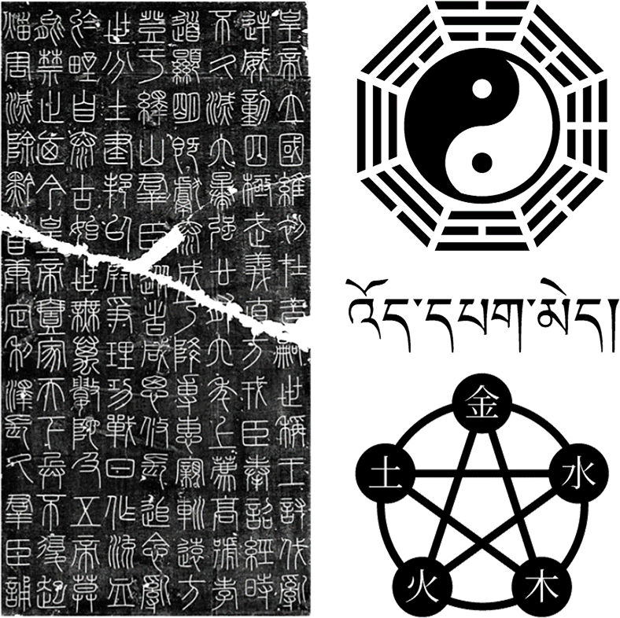
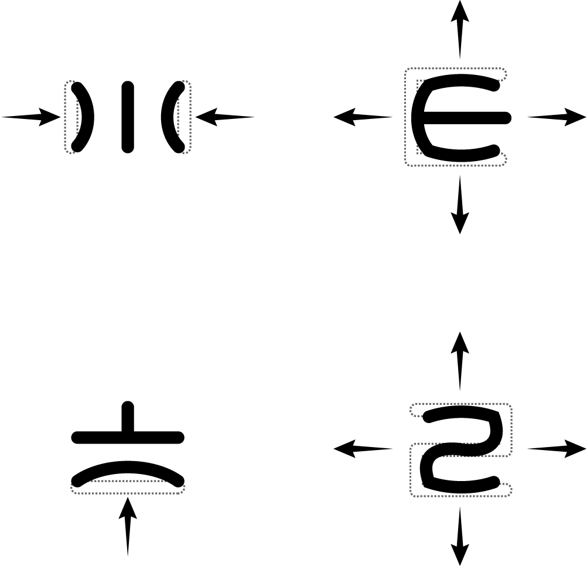
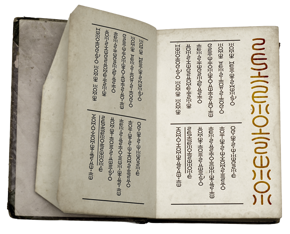
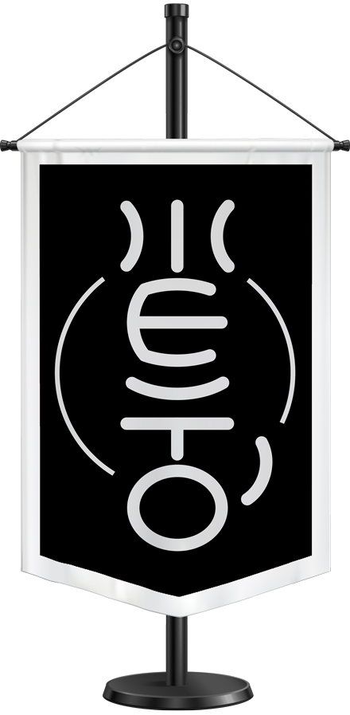
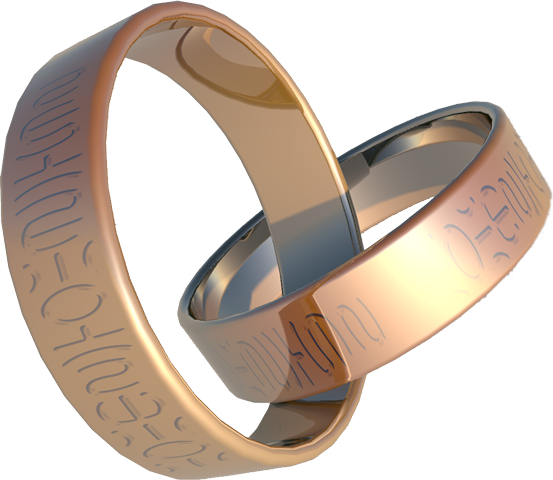

参 考 元 素
| R E F E R E N C E |

字 母 设 计
| A L P H A B E T |
| 虚构语言雷伽语共有九个辅音与十个元音，其中两个元音是鼻化音，两个元音是儿化音。 九个辅音字母的字形设计分别对应九宫八卦，但将卦爻的阴阳表现方式由虚实线改为了横竖线，而源自中宫的字母采用半个太极的形状。 五个元音字母的字形设计分别对应五行元素，另外的五个元音字母则基于这五个中的三个为原型进行变形。 字母的字形风格参考自篆书，而组合方式则参考自藏文，故设定书写方向为自上而下从右到左的竖式排版，单词间用点隔开，句子间用空格隔开。 |
| Á | É | Ó | Í | Ú | Ý |
| a' | e' | o' | i' | u' | y' |
| ÉN | ÓN | ÉR | ÓR |
| N | n | R | r |
| 正如法文使用了省文撇将不发音的部分隐去，雷伽语也有使用符号将单词中不发音的音节隐去，但这不是因为吞音或联诵，只是为了简化表达罢了。 隐去音节后的单词，会在被隐去部分前的第一个元音上加上省文撇，直接附着在字母上而非独立连在字母后面。 |
| 弧形的设计不仅是为了使之形似篆字，还是为了收束视觉，在组合成文时更优美齐整。 辅音字母一般是向内变形的，元音字母则是向外的，这样可以使辅音元音字母连贯，音节的整体感更强。 |  |
成 文 效 果
| P A R A G R A P H |
|
应 用 场 景
| E N V I R O N M E N T |
 | |
 |  |
各种幻想世界物品